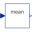

ThyristorCenterTapmPulse_R2*m pulse thyristor rectifier with center tap and resistive load |
|
Diagram
{kind=link}
Information
This information is part of the Modelica Standard Library maintained by the Modelica Association.
This example shows a controlled m pulse center tap rectifier with resistive load, where m is the number of phases.
Plot current currentSensor.i, average current meanCurrent.y, voltage voltageSensor.v and average voltage meanVoltage.v.
Parameters (4)
| Vrms |
Value: 110 Type: Voltage (V) Description: RMS supply voltage |
|---|---|
| f |
Value: 50 Type: Frequency (Hz) Description: Frequency |
| constantFiringAngle |
Value: 30 * pi / 180 Type: Angle (rad) Description: Firing angle |
| R |
Value: 20 Type: Resistance (Ω) Description: Load resistance |
Components (11)
| ground |
Type: Ground |
|
|---|---|---|
| star |
Type: Star |
|
| sineVoltage_p |
Type: SineVoltage |
|
| rectifier |
Type: ThyristorCenterTapmPulse |
|
| voltagesensor |
Type: VoltageSensor |
|
|  | meanVoltage |
Type: Mean |
| rootMeanSquareVoltage |
Type: RootMeanSquare |
|
| currentSensor |
Type: CurrentSensor |
|
| meanCurrent |
Type: Mean |
|
| pulsem |
Type: VoltageBridge2mPulse |
|
| resistor |
Type: Resistor |